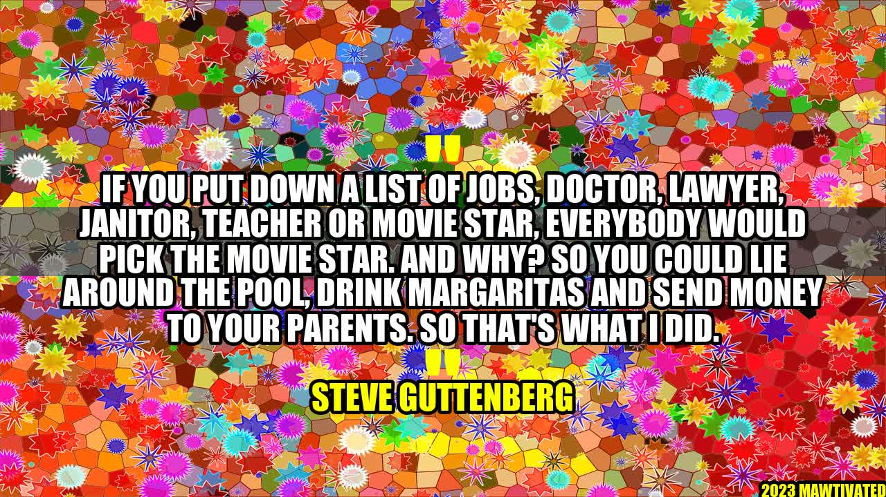

Becoming a Successful Movie Star: How to Achieve Your Dreams

Have you ever dreamed of becoming a movie star? Do you want to be adored by fans, walk the red carpet and attend lavish parties? If so, you're not alone. Many people dream of this glamorous lifestyle, but few are willing to put in the hard work necessary to achieve it.
Author's Story
My name is Steve Guttenberg, and I'm an actor known for my work in films such as Police Academy and Short Circuit. When I was young, I dreamed of becoming a movie star, just like millions of others. However, I knew that it wouldn't be easy. I had to work hard, persevere through setbacks and rejection, and constantly hone my craft. But with dedication and determination, I was able to achieve my dreams.
Why Become a Movie Star?
As the famous quote goes, "If you put down a list of jobs, doctor, lawyer, janitor, teacher or movie star, everybody would pick the movie star. And why? So you could lie around the pool, drink margaritas and send money to your parents." While this may be an oversimplification, there's no denying that the lifestyle of a successful movie star can be incredibly rewarding.
- Fame: Being recognized and admired by fans around the world.
- Wealth: Earning millions of dollars for each project.
- Creativity: Being able to express yourself through acting and storytelling.
- Opportunities: Working with talented people, traveling to exotic locations, and attending premiere events.
How to Become a Movie Star
Now that you know why you want to become a movie star, let's talk about how to achieve your dreams. Here are some practical tips that will help you get started:
- Invest in Your Education: While there's no one path to success in the entertainment industry, getting a degree in acting or film can help you develop the skills and knowledge needed to succeed. Look for accredited schools with strong reputations.
- Build Your Network: Attend events, film festivals, and industry gatherings to meet other actors, directors, and producers. Join professional organizations and online communities to stay up-to-date with industry news and trends.
- Audition, Audition, Audition: Take every opportunity you can to audition. Even small roles or background work can give you valuable experience and exposure.
- Practice Your Craft: Act in local theater productions, make short films with friends, and study the greats. Never stop learning and honing your skills.
- Be Professional: Show up on time, be polite and respectful, and always put in your best effort. You never know who's watching.
Conclusion
- Define your goals and motivation for becoming a movie star.
- Invest in your education, build your network, audition regularly, and practice your craft.
- Be professional and stay committed to your dreams, even in the face of rejection and setbacks.
Hashtags
#moviestar #acting #hollywood #filmindustry #dreambig
SEO Keywords
movie star, Hollywood, acting, film industry, success
Article Category
Entertainment
Curated by Team Akash.Mittal.Blog
Curated by Team Akash.Mittal.Blog
Share on Twitter Share on LinkedIn